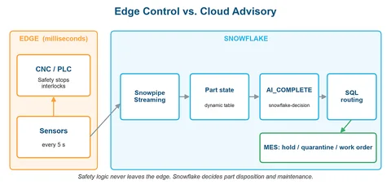

Snowflake Cortex 在工厂质量中做结构化 AI 决策
有效阅读仅保存在当前浏览器，用于「为你」推荐；暂停或清除记录。
DataHot 速览
文章介绍 Snowflake Cortex Decision Model 如何将制造质量中的缺陷风险分类、质量严重度评分和 MES 工单路由做成结构化 AI 决策，并强调不违背安全与架构原则。背景部分回顾 SPC 控制图（3σ 控制限、平均约 370 个样本出现一次误报）与模糊逻辑的分级推理，用主轴温度 54°C 等示例说明连续空间中的判断。它把“检测到变化”推进到“判断严重度并触发工单”，面向工厂质量处置决策。
为什么值得关注：数据从业者可关注 Snowflake 如何把 SPC/模糊逻辑等制造质量方法落到 Cortex Decision Model，并将缺陷分类、严重度评分与 MES 工单路由串成可执行的决策链路。
本文目录 16 节
译文
AI 逐段翻译Snowflake 的 Cortex 决策模型如何对缺陷风险进行分类、对质量严重程度进行评分，并路由 MES 工单——同时不违反安全或架构原则。
背景：从 SPC 和模糊逻辑到结构化 AI 决策
统计过程控制：检测到某些东西发生了变化
制造业质量的标准方法是统计过程控制（SPC）。Walter Shewhart 于 20 世纪 20 年代在贝尔实验室引入了控制图。每个过程都会自然波动；SPC 从数据中估计这种波动，并绘制控制限，通常为过程均值附近的 ±3σ。超出控制限的点表明过程已经发生变化，不再处于“受控”状态。诸如 Western Electric 规则之类的运行规则增加了灵敏度：它们将控制图划分为 1σ、2σ 和 3σ 的区域，并标记模式，例如三个点中有两个超出 2σ，或连续多个点位于均值的同一侧。
SPC 的优势在于其统计学基础。误报率是预先已知的：在稳定过程上，3σ Shewhart 控制图平均约每 370 个样本出现一次误报。其局限性也同样明显。经典控制图一次只监测一个变量，它们检测到的是过程已经发生了偏移，而不是原因或该采取什么措施。Hotelling 的 T² 等多变量方法将多个变量组合起来，但其报警难以解释。诊断工作留给工程师。
模糊逻辑：对含义进行推理
制造控制系统也长期使用分级推理，其中结果以程度而非二值来表示。Lotfi Zadeh 于 1965 年将模糊集形式化。CNC 主轴轴承温度为 54°C 时，很少严格地属于“正常”或“损坏”。在模糊系统中，它可能同时是 0.6 的“正常”和 0.4 的“升高”，因为隶属函数在正常范围的边缘附近发生重叠。真实的制造过程在连续空间中运行，需要以程度进行推理。
经典模糊逻辑流水线包含三个阶段：
- 模糊化——将精确的传感器值映射到重叠类别中的隶属度。54°C 的主轴温度变为 {正常: 0.6, 升高: 0.4}。2.7 mm/s 的振动变为 {可接受: 0.3, 高: 0.7}。
- 规则评估——在模糊化输入上应用 IF-THEN 规则。IF 振动 IS 高 AND 温度 IS 升高 THEN 缺陷风险 IS 高。典型的 CNC 质量系统可能有数十到数百条此类规则，每条规则产生一个模糊输出。
- 去模糊化——将组合后的模糊输出合并为单个可操作的值。一种常见方法是重心法：输出类别的加权平均值，按其隶属度加权。结果是一个精确数值，可用于驱动继电器、设置标志或触发报警。
模糊控制自 20 世纪 70 年代中期以来一直用于工业应用，并且仍然是一种成熟的方法。然而，定义和维护规则库需要深厚的领域专业知识。
同一问题的两种答案
SPC 和模糊逻辑的共同点比乍看起来更多。两者都将连续的传感器值转化为离散动作，并且两者都取决于其阈值。SPC 控制图的区域是“偏离正常有多远”的阶梯式版本，很像隶属度。两者在处理的不确定性类型上有所不同：
- SPC 处理随机性。其控制限来自测量到的过程波动，其报警具有已知的概率。
- 模糊逻辑处理模糊性。其隶属函数编码了专家关于“升高”含义的判断，而不是从数据中测量到的频率。
在实践中，它们相互补充。SPC 告诉操作员过程已经漂移。模糊规则库或经验丰富的工程师会找出是哪种条件组合在驱动它以及该采取什么措施。许多工厂拥有第一层，并依赖人来实现第二层。
决策模型的定位
Snowflake 的决策模型用 LLM 取代了复杂的高维规则库，同时保留了制造自动化所需的分级输出结构。其输出符合与 SPC 相同的操作模式：将数值与阈值比较即可触发动作。不过，这些数值是不同的。SPC 将测量到的过程统计量（均值、极差、标准差）与从观测波动推导出的控制限（通常为 ±3σ）作图。它监测的是过程，而不是单个零件，并且不输出缺陷概率。决策模型返回零件级概率和概率加权评分，下游 SQL 将其与阈值比较。
其推理扮演了模糊规则库的角色，将多个变量一起解释并诊断可能的原因。有一条注意事项从 SPC 延续下来：模型的概率来自模型，而不是来自测量到的过程波动，因此阈值必须根据实际检验结果进行校准（参见“为你的工厂进行校准”）。SPC 信号，例如“主轴温度违反 Western Electric 规则 2”，也可以作为模型输入的一部分传递给模型。
三种问题类型中的每一种都扮演着经典流水线中模糊规则库所扮演的角色。这种比较是关于角色的，而不是数学等价：模糊隶属度是真实程度，可能重叠（54 °C 可以是 0.6 的“正常”和 0.4 的“升高”，而这些值不必求和为任何特定值），而决策模型返回的是概率。
- 选择 - 分类。模糊化为重叠的隶属度赋值，而选择返回的是互斥类别上的概率分布，其总和为 1（例如，单一最可能的缺陷类型）。这是分类概率，而不是模糊化。
- noul——针对单个陈述的单一分级输出。它是该陈述为真的概率，而不是真实程度。
- 评分——与去模糊化最接近的匹配。与重心去模糊化类似，它将分布合并为一个精确数值：有序评分标准上的预期水平，并随返回其背后的分布。
逻辑上的好处：将上下文融合与策略执行解耦。与其为主轴温度、振动RMS、刀具磨损和冷却液压力之间的非线性交互手工设计复杂的规则矩阵，不如让LLM充当专家解释器。它接收传感器上下文，并将其压缩为标准化概率输出。下游简单的、透明的SQL CASE语句随后路由这些概率。业务逻辑保持可审计和版本控制，而繁重的多传感器模式推理则留给LLM。
架构层级：边缘控制 vs. 云建议
在现代工业数据架构中，控制逻辑必须在两个不同的层级上运行，以确保安全性和可靠性：
- 边缘层（PLC / CNC控制器——毫秒级）： 闭环安全停止、紧急联锁和亚秒级刀具保护仅存在于物理PLC上。云数据仓库绝不能执行即时安全停止（例如STOP_LINE命令），因为存在网络延迟和非确定性执行时间。
- 云建议层（Snowflake Cortex）： Snowflake非常适合近实时质量门处置、后处理抽样、刀具寿命估算和MES（制造执行系统）工单路由。每个零件的决策在零件完成后、到达下一个下游质量门之前到达。可疑零件在该门处被扣留；它不会在切削中途被停止。

场景
一个CNC加工单元每8小时班次生产400个铝制外壳，大约每72秒一个零件。每个站点每五秒通过Snowpipe Streaming将振动幅度、主轴温度、冷却液压力和刀具磨损指数流式传输到Snowflake。
假设主轴温度漂移到其正常范围上限以上3°C，同时振动保持在高位3.1 mm/s。该零件是否可能出现表面光洁度缺陷、尺寸公差问题，还是完全没有问题？MES应该将该零件隔离以进行CMM检测，还是标记刀具需要维护？
进入Snowflake Decision
snowflake-decision模型可通过AI_COMPLETE使用，它根据一组类型化问题评估内容并返回结构化答案。它支持分类（choice）、根据有序评分标准评分（score）以及真或假评估（noul）。响应不包含自由文本：你会得到一个包含离散答案、概率分布和置信度值的OBJECT。
数据摄取与状态聚合
IoT传感器读数通过Snowpipe Streaming进入Snowflake的原始表：
CREATE TABLE iot.raw.sensor_readings (
reading_id STRING,
machine_id STRING,
part_id STRING,
reading_ts TIMESTAMP_NTZ,
spindle_temp_c FLOAT, -- Spindle bearing temperature
vib_amplitude FLOAT, -- Vibration RMS (mm/s)
coolant_psi FLOAT, -- Coolant pressure
tool_wear_idx FLOAT, -- 0.0 (new) to 1.0 (end of life)
feed_rate FLOAT, -- mm/min
surface_ra FLOAT, -- Surface roughness Ra (µm), inline probe
dim_deviation FLOAT, -- Deviation from nominal (mm), inline gauge
cycle_complete BOOLEAN -- TRUE on the final reading of the machining cycle
);一个动态表将每个零件加工周期的所有读数聚合为Decision Model可以评估的摘要：
create or replace dynamic table CNC_DECISION_DEMO.ANALYTICS.PART_QUALITY_STATE(
PART_ID,
MACHINE_ID,
LATEST_TS,
AVG_SPINDLE_TEMP,
TEMP_RANGE,
AVG_VIBRATION,
PEAK_VIBRATION,
MIN_COOLANT_PSI,
TOOL_WEAR,
AVG_SURFACE_RA,
MAX_DIM_DEVIATION,
TOOL_STATUS,
PART_COMPLETE,
READING_COUNT
) target_lag = 'DOWNSTREAM' refresh_mode = INCREMENTAL initialize = ON_CREATE warehouse = IOT_WH
as SELECT part_id, machine_id,
MAX(reading_ts) AS latest_ts,
AVG(spindle_temp_c) AS avg_spindle_temp,
MAX(spindle_temp_c) - MIN(spindle_temp_c) AS temp_range,
AVG(vib_amplitude) AS avg_vibration,
MAX(vib_amplitude) AS peak_vibration,
MIN(coolant_psi) AS min_coolant_psi,
MAX(tool_wear_idx) AS tool_wear,
AVG(surface_ra) AS avg_surface_ra,
MAX(ABS(dim_deviation)) AS max_dim_deviation,
CASE WHEN MAX(tool_wear_idx) > 0.85 THEN 'NEAR_END_OF_LIFE'
WHEN MAX(tool_wear_idx) > 0.70 THEN 'WORN' ELSE 'OK' END AS tool_status,
BOOLOR_AGG(cycle_complete) AS part_complete,
COUNT(*) AS reading_count
FROM CNC_DECISION_DEMO.RAW.SENSOR_READINGS
GROUP BY part_id, machine_id;决策查询
这是核心：单个AI_COMPLETE调用，对缺陷类型进行分类、对严重程度评分并评估刀具维护需求。只有已完成的零件才会被评估，因此每个零件通常只评分一次，而不是在仍在加工时每次刷新都评分。
CREATE OR REPLACE DYNAMIC TABLE iot.analytics.part_decisions
TARGET_LAG = '1 minute'
WAREHOUSE = iot_wh
REFRESH_MODE = INCREMENTAL
AS
SELECT
part_id,
machine_id,
latest_ts,
AI_COMPLETE(
model => 'snowflake-decision',
prompt => TO_JSON({
'state':
'CNC machining station sensor summary for part ' || part_id ||
' on machine ' || machine_id || ':\n' ||
'- Average spindle temperature: ' || COALESCE(ROUND(avg_spindle_temp, 1)::STRING, 'n/a') || ' °C (normal range: 45-55 °C)\n' ||
'- Temperature range: ' || COALESCE(ROUND(temp_range, 1)::STRING, 'n/a') || ' °C\n' ||
'- Average vibration: ' || COALESCE(ROUND(avg_vibration, 2)::STRING, 'n/a') || ' mm/s (normal: <2.5 mm/s)\n' ||
'- Peak vibration: ' || COALESCE(ROUND(peak_vibration, 2)::STRING, 'n/a') || ' mm/s\n' ||
'- Minimum coolant pressure: ' || COALESCE(ROUND(min_coolant_psi, 1)::STRING, 'n/a') || ' PSI (spec: >80 PSI)\n' ||
'- Tool wear index: ' || COALESCE(ROUND(tool_wear, 2)::STRING, 'n/a') || ' (' || COALESCE(tool_status, 'UNKNOWN') || ')\n' ||
'- Average surface roughness Ra: ' || COALESCE(ROUND(avg_surface_ra, 2)::STRING, 'n/a') || ' µm (spec: <1.6 µm)\n' ||
'- Max dimensional deviation: ' || COALESCE(ROUND(max_dim_deviation, 3)::STRING, 'n/a') || ' mm (tolerance: ±0.02 mm)\n' ||
'- Readings: ' || reading_count::STRING,
'questions': {
'defect_category': {
'type': 'choice',
'instructions': 'Based on the sensor pattern, which quality issue is most likely?',
'criteria': {
'surface_finish': 'Roughness exceeds spec, often caused by tool wear or vibration',
'dimensional': 'Part dimensions outside tolerance, often caused by thermal expansion or tool deflection',
'tool_failure': 'Imminent or active tool breakage indicated by a sudden vibration spike or temperature anomaly',
'coolant_system': 'Coolant pressure or flow issue affecting cut quality and thermal management',
'none_detected': 'All parameters within normal operating range, no quality issue indicated'
}
},
'severity': {
'type': 'score',
'instructions': 'Rate the severity of the quality condition',
'criteria': [
'Normal operation - all parameters within spec',
'Minor deviation - trending toward limits but parts are conforming',
'Moderate - one or more parameters outside spec, parts may be non-conforming',
'Severe - multiple parameters outside spec, high probability of scrap',
'Critical - risk of equipment damage or safety concern'
]
},
'tool_maintenance': {
'type': 'noul',
'instructions': 'Tooling requires scheduled maintenance intervention before next shift'
}
}
})
) AS decision
FROM iot.analytics.part_quality_state
WHERE part_complete;返回内容
以一个主轴温度升高（58°C）、振动高（3.1 mm/s）且刀具磨损（0.82）的零件为例。响应如下所示（示例值；实际响应返回未舍入的全精度浮点数）：
{
"answers": {
"defect_category": {
"type": "choice",
"choice": "surface_finish",
"confidence": 0.475,
"probabilities": {
"surface_finish": 0.58,
"dimensional": 0.24,
"tool_failure": 0.12,
"coolant_system": 0.02,
"none_detected": 0.04
}
},
"severity": {
"type": "score",
"score": 2.20,
"legend": {
"0": "Normal operation - all parameters within spec",
"1": "Minor deviation - trending toward limits but parts are conforming",
"2": "Moderate - one or more parameters outside spec, parts may be non-conforming",
"3": "Severe - multiple parameters outside spec, high probability of scrap",
"4": "Critical - risk of equipment damage or safety concern"
},
"confidence": 0.3125,
"probabilities": {
"0": 0.02,
"1": 0.18,
"2": 0.45,
"3": 0.28,
"4": 0.07
}
},
"tool_maintenance": {
"type": "noul",
"noul": 0.81
}
}
}这可以立即执行：
- 缺陷类别： 表面光洁度是最可能的问题（58%），但尺寸偏差也具有显著概率（24%），因此两者都值得检查。0.475的置信度反映了这种分裂。
- 严重程度： 2.20的分数是概率加权水平（0×0.02 + 1×0.18 + 2×0.45 + 3×0.28 + 4×0.07）。它在评分标准上将状况置于“中等”和“严重”之间。它是有序尺度上的位置，而不是精确测量。0.31的置信度表明模型不确定，并且约35%的概率质量落在“严重”或“危急”上。
- 刀具维护： noul值0.81是该陈述为真的概率。刀具很可能需要安排更换。
置信度如何计算： 对于choice和score，置信度 = (n × p_max − 1) / (n − 1)，其中n是选项或级别的数量，p_max是最高概率。当所有选项等可能时它为0，当一个选项占主导时它接近1。有五个选项时，置信度阈值0.5意味着最高选项的概率必须至少为0.6。
展平响应
CREATE OR REPLACE VIEW iot.analytics.part_decisions_flat AS
SELECT
part_id,
machine_id,
latest_ts,
decision:answers:defect_category:choice::STRING AS defect_category,
decision:answers:defect_category:confidence::FLOAT AS defect_confidence,
decision:answers:severity:score::FLOAT AS severity_score,
decision:answers:severity:confidence::FLOAT AS severity_confidence,
decision:answers:tool_maintenance:noul::FLOAT AS maintenance_probability,
(decision IS NULL
OR decision:answers:severity:score IS NULL
OR decision:answers:defect_category:choice IS NULL) AS decision_failed
FROM iot.analytics.part_decisions;下游MES操作路由
SQL层将概率输出映射到工厂MES工单。阈值位于SQL CASE语句中，在那里它们可以独立于模型的推理进行版本控制、审计，并根据历史质量数据进行调优。路由以失败关闭方式运行：只有当模型既有信心且状况良性时，零件才会通过。
CREATE OR REPLACE VIEW iot.analytics.quality_actions AS
SELECT
part_id,
machine_id,
latest_ts,
defect_category,
defect_confidence,
severity_score,
severity_confidence,
maintenance_probability,
decision_failed,
-- Part disposition (exactly one action per part, evaluated top-down)
CASE
WHEN decision_failed
THEN 'HOLD_DECISION_UNAVAILABLE' -- fail closed, never pass on NULL
WHEN severity_score >= 3.0
THEN 'QUARANTINE_FOR_CMM_INSPECTION' -- severe, regardless of confidence
WHEN severity_score > 2.0 AND severity_confidence > 0.5
THEN 'QUARANTINE_FOR_CMM_INSPECTION'
WHEN defect_category = 'tool_failure' AND defect_confidence > 0.5
THEN 'QUARANTINE_FOR_CMM_INSPECTION'
WHEN severity_score > 2.0
THEN 'HOLD_FOR_ENGINEER_REVIEW' -- high severity, low confidence
WHEN defect_category <> 'none_detected' AND severity_score > 1.0
THEN 'ROUTE_TO_SAMPLE_INSPECTION'
ELSE 'PASS_QUALITY_GATE'
END AS mes_action,
-- Tooling action, independent of the part disposition
COALESCE(maintenance_probability > 0.75, FALSE) AS create_maintenance_work_order,
-- Process action: tighten sampling on this machine when uncertainty is high
COALESCE(defect_category <> 'none_detected' AND defect_confidence < 0.5, FALSE)
AS increase_machine_sampling_rate,
-- Human review when the model is unsure about a non-trivial condition
(
decision_failed
OR (severity_score > 1.5 AND (defect_confidence < 0.40 OR severity_confidence < 0.40))
) AS needs_quality_engineer_review
FROM iot.analytics.part_decisions_flat;对于示例零件（严重程度2.20，严重程度置信度0.31，缺陷置信度0.475），路由产生HOLD_FOR_ENGINEER_REVIEW、一个维护工单，以及该机器上提高的抽样率。该零件未通过质量门。
为你的工厂进行校准
在代表你的工作负载的带标签样本上校准阈值。将模型的severity_score与实际缺陷率进行比较：
WITH final_decision AS (
-- One decision per part: the latest one made before the inspection outcome
SELECT
d.part_id,
d.severity_score,
d.severity_confidence
FROM iot.analytics.historical_decisions d
JOIN iot.analytics.quality_outcomes q
ON q.part_id = d.part_id
WHERE d.latest_ts <= q.inspected_ts -- no look-ahead past the inspection
AND d.severity_score IS NOT NULL -- skip failed (NULL) decisions
QUALIFY ROW_NUMBER() OVER (PARTITION BY d.part_id ORDER BY d.latest_ts DESC) = 1
),
final_outcome AS (
-- One outcome per part, in case a part was inspected more than once
SELECT part_id, actual_result
FROM iot.analytics.quality_outcomes
QUALIFY ROW_NUMBER() OVER (PARTITION BY part_id ORDER BY inspected_ts DESC) = 1
)
SELECT
FLOOR(fd.severity_score * 2) / 2 AS severity_bucket, -- 0.0, 0.5, 1.0 … 4.0
COUNT(*) AS total_parts,
COUNT_IF(fo.actual_result = 'SCRAP') AS actual_scrap,
ROUND(COUNT_IF(fo.actual_result = 'SCRAP') / COUNT(*), 3) AS scrap_rate,
ROUND(AVG(fd.severity_confidence), 2) AS avg_severity_confidence
FROM final_decision fd
JOIN final_outcome fo
ON fo.part_id = fd.part_id
GROUP BY 1
ORDER BY 1;实际考虑
- 延迟和吞吐量： 该模型针对吞吐量而非延迟进行优化，单次调用可能需要数秒。将其应用于一个表或查询结果中的单个语句可以让行并行处理，动态表正是这样做的。端到端延迟还包括Snowpipe Streaming摄取和刷新滞后，因此从零件完成到决策的计划时间约为一到两分钟。这用于逐零件质量门处置，而不是控制回路。
- 状态构建很重要： 包含参考范围（“正常：45–55 °C”）和上下文标志，并排除与问题无关的材料，因为它可能降低准确性。
- 错误处理： 失败的行返回NULL，路由将其视为HOLD_DECISION_UNAVAILABLE。开发期间传递return_error_details => TRUE以查看错误消息。
- 概率边界：概率永远不会精确达到 0 或 1。noul 值大致保持在 0.08–0.92 之间，并且随着选项数量增加，最大选择概率会下降（32 个选项时约为 0.83）。请使用诸如 > 0.70 的阈值；诸如 noul > 0.95 的阈值将永远不会被满足。
- 选择限制：一个选择题允许 2–32 个选项。如果你的工厂有 50 个缺陷代码，请将它们分组为面向模型的高层级类别，并在下游的 SQL 中将其映射到具体代码。一个请求最多允许 32 个问题和总共 256 个选项；每个 noul 计为 2 个选项，每个 score 按其级别数计数。
- 答案稳定性：选项顺序可能影响答案。通过 TO_JSON({…}) 传入的键会按字母顺序到达。问题 ID 对模型也可见，因此请保持其中立（例如 tool_maintenance，而不是 needs_urgent_replacement）。对于重要决策，请通过重新排序或重命名选项来测试稳定性。
- 独立问题：问题会被独立评估，因此一个问题无法在同一次调用中引用另一个问题的答案。请在 SQL 中合并答案，就像路由视图所做的那样，或者串联单独的调用。
- 关键条件：严重程度为 4 的情况必须已经由边缘控制器处理。在 Snowflake 中，它应只触发记录、升级和根因工单。
总结
决策模型在 SQL 中对已存在于 Snowflake 中的数据运行。它返回带有概率的类型化答案，下游 MES 系统无需解析自由文本即可使用，并且它在一次调用中对 IoT 传感器状态应用分类、严重程度评分和维护评估。结合 Snowpipe Streaming 和动态表，它为现有的 Snowflake 管道增加了一个结构化 AI 推理层，同时物理安全限制仍保留在边缘端。
snowflake-decision 模型处于私人预览阶段，仅对选定账户可用。功能、响应格式和限制可能会发生变化。
本文中的所有 SQL 示例均为说明性示例。实际的传感器范围、容差和决策阈值应根据你具体的制造流程进行校准。
工厂车间中的 AI 决策最初发表于Snowflake Builders Blog: Data Engineers, App Developers, AI, & Data Science（Medium 平台），人们正在那里通过高亮并回应这个故事来继续对话。
这篇内容对你有用吗？
反馈只用于改善内容筛选，不等同于收藏